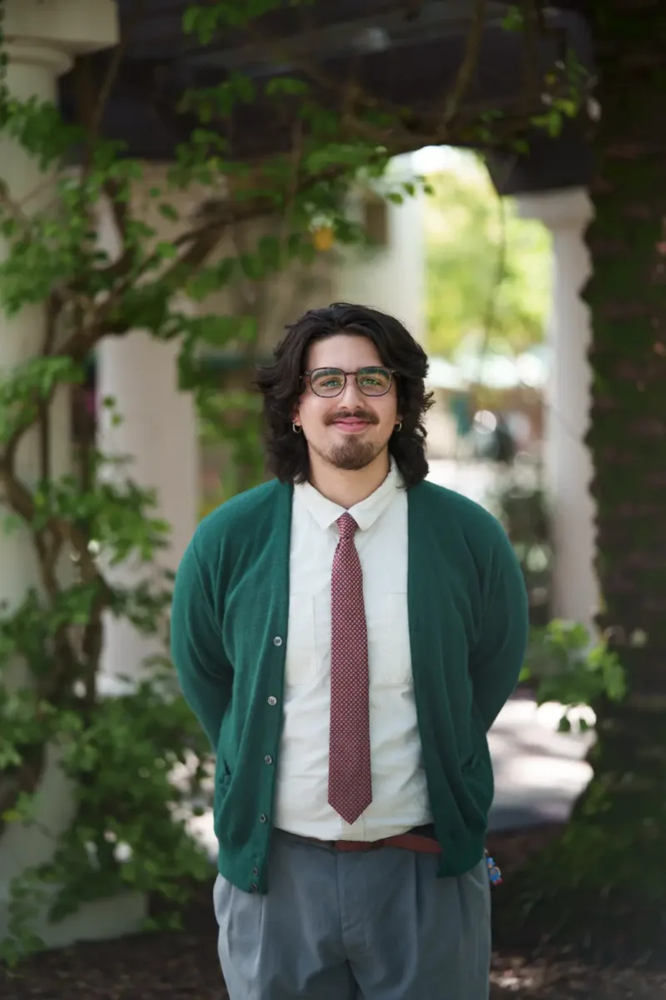

05 / A LITTLE ABOUT ME
About
Mechanical Engineering Student at the University of South Florida.
Mechanical engineering student working across regulated manufacturing, reliability, robotics, embedded systems, CAD, and human-motion research. I like projects where physical equipment, data, controls, documentation, and the people using the system all have to make sense together.
I work across the lab, the workshop, and the manufacturing floor. Off the clock, there’s usually music playing and a film somewhere on the list.
EDUCATION
University of South Florida
B.S. Mechanical Engineering
Expected December 2028 · GPA 3.33
Dynamics, Mechanics of Solids, Thermodynamics, Materials Engineering, Electrical Systems, CAD & Engineering.
Arthrex Scholar · USF Scholars Gold Recognition · Florida Academic Scholars
Hillsborough Community College
Associate of Arts
2022–2024 · GPA 3.8
Leto High School
2020–2024
TOOLS & METHODS
SolidWorks / assembly modeling / FDM printing
Python / MATLAB / OpenSim
ESP32 / Arduino / Teensy / Jetson
Power Apps / Power Automate / SharePoint / Excel
Altium / schematic capture / PCB design
Lean manufacturing / 5S workplace organization / GMP
RCA / FMEA / A3 / GDP
IMU / Vicon / motion analysis
English / Spanish
CREDENTIALS
CSWA CAD Design · CSWA Sustainability · Lean Six Sigma Yellow Belt · ReCF Pre-Engineering & Robotics · CITI Biomedical / Research Integrity · Altium Education PCB Basic Design Course Certificate.